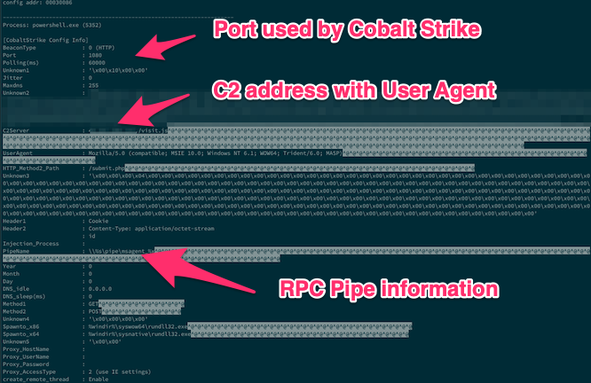

Let’s start hunting
- badguy[.]net has historically resolved to
45.xxx.xxx.xxxso we’ll start there

- Robtex is free and awesome
Jeff Beley @jbeley
01-APR-2019
OSS Evangelist
The nosiest guy on your network
docker fanatic
You don’t get to execute on that many machines without credentials
| Tools | |
|---|---|
| SSH Client | byobu ( terminal workflow enhancer ) |
| imount ( exposing images ) | volatility ( memory analysis ) |
| yara ( supercharged pattern matcher ) | * scalpel ( file carving ) |
| loki (tradecraft hunting ) | plaso (timeline for targeted artifact pulls) |
| other GNU tools |
Total cost: 0$
No dongles required
byobu
byobu-configapt-get or brewGNU Screen
apt-get or brew# set the number commands for bash to remember in the command history
HISTFILESIZE=1000000
# set the maximum number of lines to store in the bash history file
HISTSIZE=1000000
# set the format of the timestamps stored in the bash history file
HISTTIMEFORMAT='%F %T '
# force bash to write to history file upon returning to a prompt,
# this ensures bash logs commands even when the interactive shell session terminates
PROMPT_COMMAND='history -a'works with E01s VMDKS RAW bitlocker LVM
runs in foreground by default ^z or use byobu
NOTE: Userspace filesystems (NTFS, EWF, etc) are slow. Thus the need for targeted collections.
45.xxx.xxx.xxx so we’ll start there
If vmware snapshot, don’t forget to convert to raw format
strings then strings again
strings -o -el memdump.mem > memdump.txt
strings -o memdump.mem >> memdump.txt
egrep -iwF 'badguy.net|45.xxx.xxx.xxx' memdump.txt > badguy.txt
less badguy.txtAttack graph…We’ve seen some stuff
Graph of attacker activities
45.xxx.xxx.xxx is pretty interestingShodan FTW
6ece5ece4192683d2d84e25b0ba7e04f9cb7eb7crule CobaltStrike_JPCERT {
strings:
$v1 = { 73 70 72 6E 67 00}
$v2 = { 69 69 69 69 69 69 69 69}
condition:
$v1 and $v2
}
docker pull jbeley/lokiamcache,filestat,mft,prefetch,recycle_bin_info2,winevtx,winiis○ Plain text, weakly encrypted (AES-32) . Looks like the local admin password (which was cracked in 0.068 secs) was xxxxxxx
§ FILE: /data/System Volume Information/DFSR/Private/XXXXXXXXXXXXXXXXXXXXXXXX.xml SCORE: 50 TYPE: XML SIZE: 560
FIRST_BYTES: xxxxxxxxx / <?xml version="1.0"
MD5: xxxxxxxxxxxxxxxxxxx
SHA1: xxxxxxxxxxxxxxxxxxx
SHA256: xxxxxxxxxxxxxxxxxxx CREATED: Tue Mar 15 14:43:10 2016 MODIFIED: Thu Nov 8 03:03:44 2012 ACCESSED: Wed Nov 7 20:02:55 2012
REASON_1: Yara Rule MATCH: Groups_cpassword SUBSCORE: 50
DESCRIPTION: Groups XML contains cpassword value, which is decrypted password - key is in MSDN http://goo.gl/mHrC8P REF: http://www.grouppolicy.biz/2013/11/why-passwords-in-group-policy-preference-are-very-bad/
MATCHES: Str1: cpassword="L Str2: changeLogon= Str3: description= Str4: acctDisabled=
Why is this bad?
Using gpprefdecrypt.py
time python gpprefdecrypt.py xxxxxxxx
MyVoiceIsMyPasswordVerifyMe
real 0m0.269s
user 0m0.168s
sys 0m0.040sTargeted scalpel.conf
7z y 10000000 \x37\x7a\xbc\xaf\x27\x1c
zip y 10000000 PK\x03\x04 \x3c\xac
rar y 10000000 Rar!brew| Descrption | Command |
|---|---|
| zgrep for zip | unzip -p zipfile.zip |grep -F -f keywords.txt |
| zgrep for 7z | 7za x -so |grep -F -f keywords.txt |
| Poor man’s paralell | |xargs -P 8 command |
| Find files | find /mounted/directory -iname "*PF" -ls |
| syncing files | rsync --inplace --partial --progress --stats -avz YOURUSERID@sftp.nunya.biz:/jails/CASENAME/upload/ /LOCAL/ |
| Listing 7z | 7za l FILENAME.7z |
| Listing zip | unzip -v FILENAME.7z |
| Listing rar | unrar l FILENAME.7z |
| Dumping hex | xxd FILENAME |less |